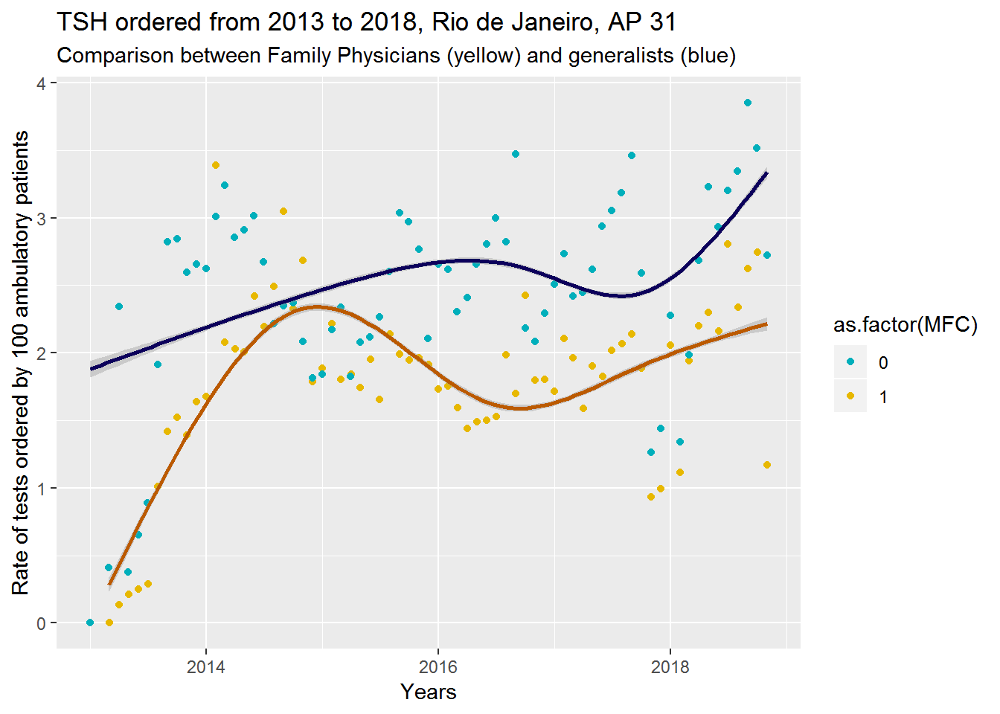

Chapter 5 Blood tests ordered in Primary Care in Rio de Janeiro
This analysis aims to identify patterns of physicians clinical behaviour regarding some blood test commonly ordered by doctors dealing with ambulatory patients in Primary Care. The period of analysis comprises every medical consultation in ambulatory care from January 1st, 2013 to November 1st, 2018 made by every doctors that work (or worked) in one of the 30 Primary Care Clinics at the ‘AP 31’ district in Rio de Janeiro. The total number of consultations was 2.967.694 during the period of analysis, that is the same period of the inclusion of the Eletronic Medical Records in the city.
The total number of doctors that worked in the area is 952: 208 (21.8%) of them trained Family Physicians or residents in Family Medicine and 744 (78.2%) doctors with no special training for Primary Care, some of them with training in another residency (Internal Medicine, Pediatrics, OB/GYN). These doctors will be called ‘Generalists’ in this report.
The rates were calculated for every doctor by dividing the number of each test ordered by the number of consultations made during a month. For comparison, the average rate was calculated for Family Physicians and Generalists.
The blood tests chose for the sake of comparison are very common laboratory exams ordered in Primary Care and are sensitive for interventions aiming best practices in ambulatory care and special training in Family Medicine.
The rationale for this study is that financial and institutional investments made in the last years to promote Family Medicine as the medical specialty for Primary Care in Rio de Janeiro should show some results such as better health outcomes, better care delivered for the patients and better use of healh resources available. In this study we will focus on blood tests as a resource that must be rationaly used by the health care provider and the hypothesis is that Family Physicians, due to their special training, order less blood tests then Generalists.
- HEMOGRAM
One of the most commonly ordered tests in Primary Care (PC). Physicians tend to order it if they need to order any other blood test, even if no information is required from this exam.

- CREATININE
Blood test commonly ordered for patients with suspition of Renal Failure and for patients at risk for cardiovascular events, such as those with Hypertension and Diabetes.
- UREA
Blood test commonly ordered for hospitalized patients and for those with Renal Failure as a secondary test to identify the origin of the renal disease. For patients in PC two conditions are likely to have this test ordered: Renal Failure and Heart Failure - two conditions not so prevalent in PC. For patients with Hypertension and Diabetes this test add no help to their treatment.
- URIC ACID
This blood test is specific for patients with (or suspition of) gout arthritis. Due to the fact that patients with end-stage kidney disease have a higher risk of death when their Uric Acid levels are high, some doctors use to order this test for every patient at risk for cardiovascular disease, even if it is not helpful for patients with no renal demage.
- The Cholesterol Combo
This combo is usualy ordered for patients at risk for cardiovascular events. Since the advent of cholesterol as one of the main responsible for heart attack and stroke, it is offered for almost every patient older than 45.
All graphs but LDL Cholesterol show no difference between Family Physicians and Generalist. This only difference show that Family Physicians are more familiar with the formula used by the laboratories to calculate the LDL share of the Total Cholesterol. With this simple formula is posible to order only three test (Total Cholesterol, HDL Cholesterol and Triglycerids) to find the value for LDL Cholesterol.
- Glicose and A1C Hemoglobin
This tests are among the most ordered exams in Primary Care. They usually are ordered for two reasons related to Diabetes and glucose metabolism problems. Glucose is the first exam ordered to diagnose Diabetes - two tests higher than 126 mg/dL makes the diagnosis. After a patient is diagnosed with Diabetes the condition is managed with hypoglicemic measures (diet, weight loss, exercises and some medications) and the patients A1C hemoglobin must be checked every 6 months - in some cases doctors can do it in a shorter lag.
In the glucose graph pregnant woman must be taken from the analysis, since this test is part of the pre-natal care protocol.
- URINE ANALYSIS
- The Thyroid Combo - TSH, T4, T4 and Free - T4
Thyroid problems are commom problems in Primary Care, especially Hypothiroidsm, which affects *** patients. Three problems occur with this tests. The first one is the “combo” issue. During graduation young doctors usually learn that, when it is needed to investigate any Thyroid gland problem, it must be done by ordering the full “combo” of exams. For the most common thyroid problems though, TSH provides enough information about the gland.
The second problem is the “follow up” issue. Patients with Hypothyroidism (the most frequent thyroid disease) have lower levels of THS and need to take medications for hormone replacement. At the time of the diagnosis TSH levels are usually high (that makes the diagnosis) and with the hormonal replacement those levels must come back to the normal range (0.4 - 4 mg/dL). Therefore, there must be a dose adjustment by checking the TSH levels after some weeks of treatment. At this moment, the “combo” is ordered and three useless tests are performed.
The third problem is related to clinical reasoning skills to deal with patients with undiferentiated symptoms in Primary Care and it explains the differences between the rates. During graduation medical students learn that thyroid gland problems can produce a vast and vague spectrum of symptoms. During the Family Medicine training doctors learn comunication skills and patient centered clinical methods that help them to solve some of this diagnostic challenges, avoiding unnecessary TSH tests. With no special training it is hard to approach patients ideas, concerns and expectations about their illness and easily a generalist will follow the line learnt at medical school: “If you don’t know what your patient has, check the thyroid gland”.
In the T3, T4 and Free-T4 graphs what is shown is not a behavioural change among generalist, but a prohibition from the Municipal Department of Health for Primary Care physicians to order this tests without consent from the medical director of the clinic. Even with this vertical intervention, Family Physicians still order less PSA than their generalists colleagues.



- PSA for Prostate Cancer Screening
Prostate Cancer Screening is a big public health and political issue. Media and medical specialties insist on calling adult men to perform this test as an anual “check-up”, advising them that this “frequent” cancer is treatable and deaths by prostate cancer are avoidable. Public health experts and evidence based physicians advocate against this test, telling men to avoid it, showing the consequences of overdiagnosis. Family Medicine is one of the medical specialties concerned with having good evidence to offer any procedure for their patients.
In the graph what is shown is not a behavioural change among generalist, but a prohibition from the Municipal Department of Health for Primary Care physicians to order this tests without consent from the medical director of the clinic. Even with this vertical intervention, Family Physicians still order less PSA than their generalists colleagues.